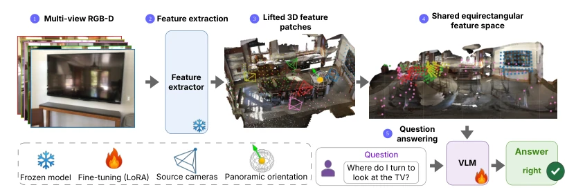

OneCanvas: 3D Scene Understanding via Panoramic Reprojection
Bartłomiej Baranowski, Dave Zhenyu Chen, Matthias Nießner abspdf
论文点评Review
OneCanvas 是个“投机取巧”的聪明人。它不硬改 VLM 架构，而是把多视角特征“投影”到全景画布上，假装成单张图喂给模型。这招省了训练算力，效果还顶，但代价是必须依赖深度和位姿。对于需要精确 3D 感知的具身智能，这算是个高效的“降维打击”，不过一旦深度估计翻车，全景图就成鬼画符了。它证明了只要输入格式对，老模型也能干新活，但别指望它能处理没有深度信息的纯 RGB 场景，且全局全景图限制了超大室外场景的精度。
—
研究动机Motivation
现有 3D VLM 要么加复杂几何编码器，要么堆数据。审计发现它们常靠文本先验作弊，而非真正推理空间关系 (Ma et al. [2026])。架构融合训练成本高，数据扩展需百万级 QA 对。OneCanvas 试图绕过这些坑，用统一坐标系让模型直接“看”懂空间，而非猜答案。相比 Ross3D 或 SpaceMind 等依赖重建或专用编码器的方法 (Fan et al. [2026], Zhao et al. [2025])，它更轻量，但牺牲了纯 RGB 的通用性，且需解决深度估计误差传播问题。
Figure 1: OneCanvas (1) backprojects per-frame patch features to 3D, (2) aggregates them in a common reference frame centered on a chosen viewpoint, and (3) places each patch at its continuous angular position on a panoramic canvas consumed by the VLM as one image.

Figure 3: Method overview. Multi-view images are encoded by Qwen3-VL’s frozen vision encoder, and lifted patches land at continuous positions on a shared equirectangular panorama. The VLM consumes this representation through its native attention layers.
Figure 2: OneCanvas benchmark comparison. (a) Per-question-type accuracy on SQA3D and (b) zero-shot accuracy on SPBench (multi-view and single-image splits), shown as radar charts against the strongest competing methods. (c) Training compute (A100-equivalent GPU-hours, log scale) versus VSI-Bench accuracy.